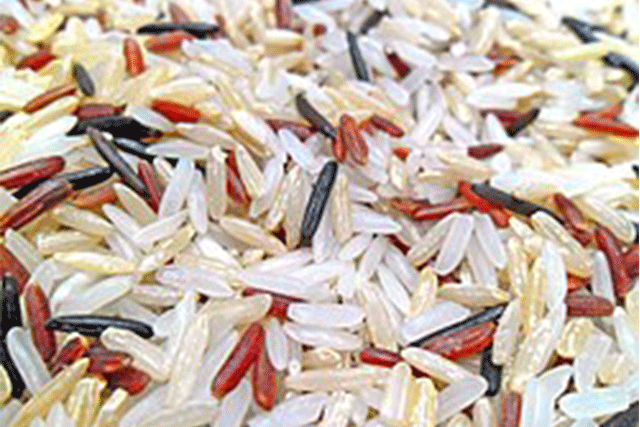
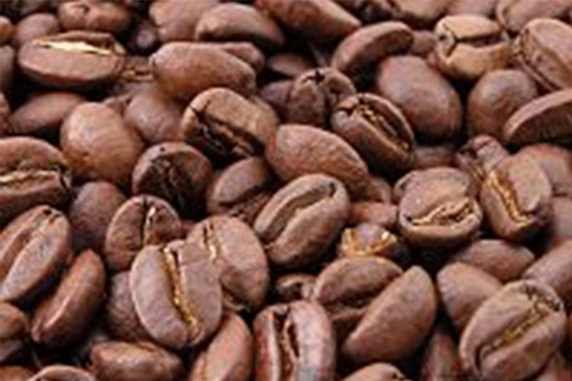
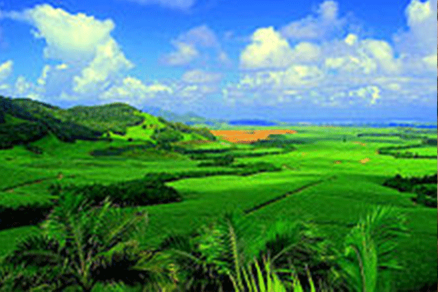
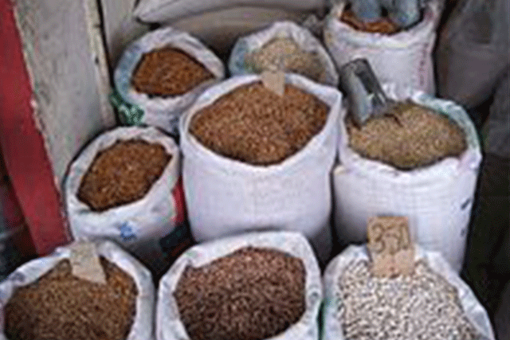
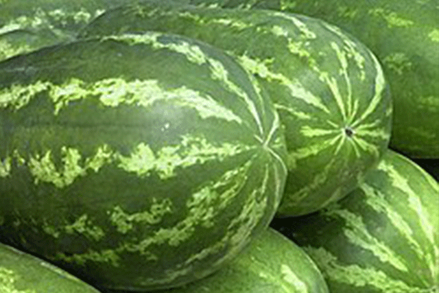
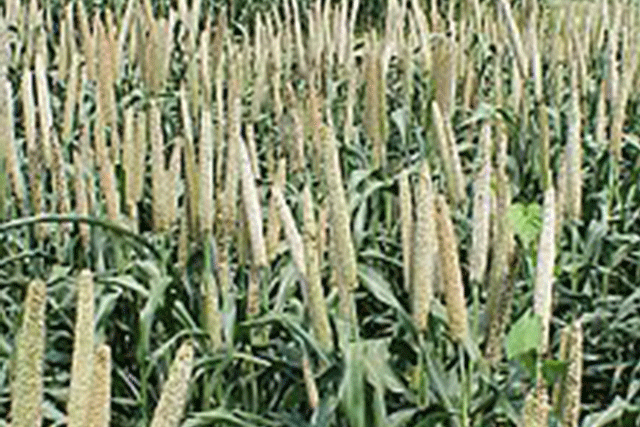
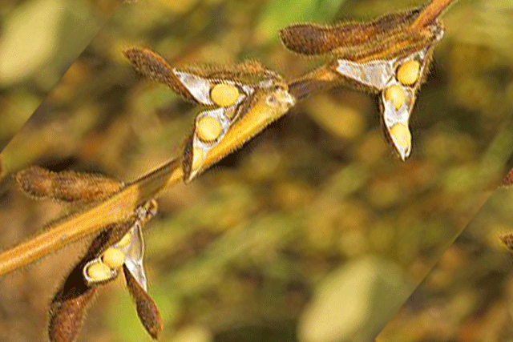
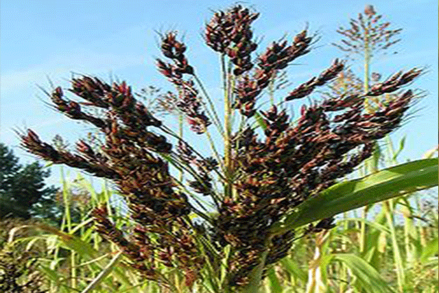
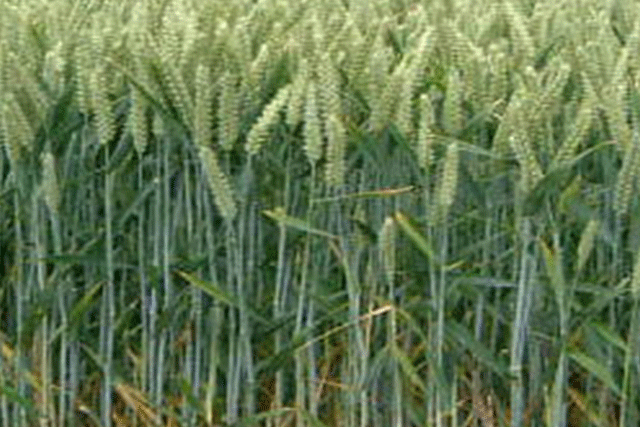

Agricola.com - Especializada em Produtos de Agricultura
Home
Clientes
Serviços
Blog
Quem somos
Contato
Agricultura
Agricultura é o conjunto de técnicas utilizadas para cultivar plantas com o objetivo de obter alimentos, bebidas, fibras, energia, matéria-prima para roupas, construções, medicamentos, ferramentas, ou apenas para contemplação estética.

Arroz
Terceira maior cultura cerealífera do mundo...

Café
Produzida a partir dos grãos do fruto do cafeeiro...

Cana-de-açúcar
Principalmente para a produção de açúcar e etanol...

Feijão
Proporciona nutrientes essenciais como proteínas...

Melancia
A planta é rasteira e anual com folhas triangulares...

Milhete
Nome dado a várias espécies cerealíferas produzidas...

Soja
É empregada na alimentação humana (sob a forma de óleo de soja...

Sorgo
O sorgo é o quinto cereal mais produzido no mundo, antecedido...

Trigo
O trigo é uma gramínea cultivada em todo o mundo...